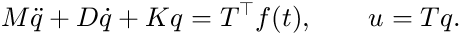
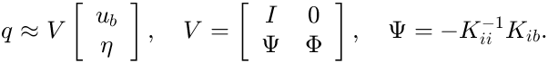

Modal Analysis, Dynamics and Reduction
Contents
Natural frequencies
[V, f] = fem.modes(K, M, n)
The lowest n frequencies (Hz) and mass-normalised mode shapes (V'*M*V = I), by shift-invert Lanczos. Free and partly free systems (singular K) are handled: rigid-body and mechanism modes appear with f = 0. Small systems are solved densely.
Dynamics
The equations of motion in q are

fem returns K and M; damping is up to you, e.g. Rayleigh damping D = alpha*M + beta*K. Tutorial 8 shows frequency responses (direct and modal), Newmark time integration, and state-space forms. For explicit time integration use a.system(Lumped = true).
Craig-Bampton reduction
[Kc, Mc, V, f] = fem.craigBampton(K, M, b, n)
Keeps the dofs b (indices into K, e.g. from a.qdof) as physical coordinates and adds n fixed-interface modes:

n = 0 gives Guyan reduction, which is exact for static loads at the boundary. The full field follows from u = T*V*x. Good boundary dofs are interfaces, actuators and sensors: e.g. the 6 dofs of a coupling or rigid body, or joint coordinates. See Tutorial 9.
ib = a.qdof(a.dof('flange'));
[Kc, Mc, Vc] = fem.craigBampton(K, M, ib, 20);
The 6 x 6 stiffness at a rigid body follows from Guyan reduction onto its dofs: Ks = fem.craigBampton(K, M, a.qdof(a.dof('shuttle')), 0).